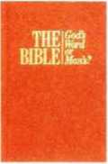
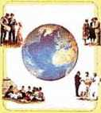

LIFE—HOW DID IT GET HERE? BY EVOLUTION OR BY CREATION?
November 1991
For United States of America
Vol. 34, No. 11
Skillfully Handle the Word of Truth
1 Our skill in using God’s Word can affect the way people respond to the good news. Thus. Paul encouraged developing proficiency in the ministry, saying: “Do your utmost to present yourself approved to God, a workman with nothing to be ashamed of, handling the word of the truth aright.”—2 Tim. 2:15.
2 Skill in using the Bible must be developed. Setting aside time for personal study and attending Christian meetings is essential. However, we must put into practice the things we learn by regularly using the Bible in the ministry. This requires continual effort as we seek God’s help and guidance.—1 John 3:22.
3 Focus on God’s Word: It is important for people to realize that our message is not of our own originality but from God’s written Word. (John 7:18) Showing a person what God says on a subject in the Bible can have great impact. Righteoushearted people are drawn to the Bible’s powerful message. As we make greater use of the Scriptures, we become more proficient and will be able to provide others with greater exposure to God’s Word, which will be of benefit to them.
Be Whole-Souled in the Field Ministry
Part 5: The Rich Benefits of Whole-Souled Service
1 Jehovah makes available to his whole-souled servants a boundless supply of rich benefits. (Ps. 116:12) How can we enjoy a full measure of blessings from Jehovah in our ministry? What benefits are in store for us? What must we do to assure ourselves of his approval and favor?
2 Personal Effort Required: The extent to which you enjoy God-given benefits depends, in large measure on your individual efforts to do God’s will. Regarding the ministry, Paid wrote: “Each person will receive his ojvn reward according to his own labor.” (1 Cor. 3:8) Let us therefore have as full a share in the ministry as we possibly can. The apostle Paul had the personal reward of helping many people, even entire congregations, to come to know God. What joy he felt in observing their firmness in the faith! (1 Thess. 2:19, 20) Likely, your circumstances will not allow you to be as fully involved in the ministry as Paul
4 Most people are unfamiliar with the Bible. When using it, we must do more than just read texts. Thoughtful preparation is necessary to determine how to introduce a scripture. Questions or a stated problem may be used to arouse interest. Also, attention must be given to what we say after the scripture is read. The person may not be able to absorb the point in just one reading. Reemphasizing key words and making application will permit the ideas to sink in.—See School Guidebook, studies 24 and 25.
5 The Offer: When we find people during November who are sincerely interested, we will offer them the New World Translation of the Holy Scriptures along with The Bible—God's Word or Man’s? How might we approach people with this offer? After introducing ourselves we could say: rToday, many look to various individuals or mibltra-tiOns T6f~guidance. What do you feel is the best source of practical guidance? [Allow response.] Consider what the Bible says about the true source of wisdom. [Read Proverbs 2:6, 7.] Human was. Yet, would it not be a rich blessing to help a person or even a family of sheeplike ones become firmly established on the road to life? What an^incentive to work hard in the house-to-house ministry and follow through with return visits and Bible studies!
3 Further Benefits: An invaluable benefit of whole-souled service is that, as a fellow worker, one is drawn closer to Jehovah and Jesus Christ. (Matt. If: 29, 30; 1 Cor. 3:9) What joy there is to sense God’s spirit helping you in the ministry! (Mattri0:20; John 14:26) Furthermore, diligently working side by side with others in the congregation strengthens our bond of love and unity.
4 We cannot enjoy full benefits from Jehovah unless we fully support the ory ganization he is using to accomplish his will in these last days. (Compare 2 Kings 10:15.) When we closely and wholeheartedly follow^ the direction we receive through God’s channel and are actively wisdom has proved sadly lacking, leading to misfortune and despair. God's wisdom, though, has always proved reliable and beneficial. [Read Isaiah 48: 17, 18J_’therefore, we should" lookjtb God, who provides the directionheeded to cope with the problems facing us.” Then we could turn to chapter 12 in the God’s Word book and direct attention to paragraph 2. After that, an applicable point from the chapter could be tied in.
• After using Proverbs 2:6, 7 to highlight the superiority of God’s wisdom, introduce the New World Translation and explain to the householder why you have come to respect and treasure the Bible. Let him know that its teachings will benefit him and provide a solid hope for the future. Such a discussion may open opportunities to point out some of the Bible’s wise counsel on everyday problems and may lead to a Bible study.
7 Jesus always referred to the Scriptures to aid honesthearted ones and refute his opposers. It was Paul’s custom to ‘explain and prove by references’ the things he taught. (Acts 17:2, 3) Our confidence and joy in the ministry will increase as we earnestly strive to become ever more skillful in handling the Word of truth.
involved in congregation activities, we are spiritually protected from Satan’s crafty devices. We are enabled to have a more productive share in the ministry.
5 This five-part series of articles on being whole-souled in the field ministry has highlighted a number of factors that are involved. Do you recall what the keys are to building appreciation for Jehovah, which motivates a person to be whole-souled? (July) Why is preparation essential for building up enthusi-asrcrin tse-field ministry? How can we prepare? (August) How can experienced publishers^ help. Qthers to be whole-souled? (September) How can good personal organization help us be whole-souled in the ministry? (October) Are you applying these suggestions?
6 Jehovah wants us to benefit ourselves by obeying him. (Isa. 4817) Furthermore. tne benefits, of whole-souled service extend to those who listenjn you. (1 150? 4:15, 16) You can be sure that as you diligently apply yourself to the work at hand, Jehovah will observe this and “you will receive, the due reward of the inheritance," everlasting life.—Col. 3:23,24.
Service Meetings for November
Week Starting November 4
Song 180
10 min: Local announcements and selected Announcements from Our Kingdom Ministry. Call attention to outstanding publisher peak, and commend publishers for their part.
20min: “Skillfully Handle the Word of Truth.” Questions and answers. Highlight the need to use the Bible at the doors. After discussing paragraph 5, demonstrate suggested presentation. Also, briefly demonstrate how to offer the Bible with Topic for Conversation. Point out that at times publishers may wish to offer Just the God’s Word book to individuals who do not appear to want another Bible.
15 min: “The New World Translation —Scholarly and Honest.” Discussion of article appearing in the March 1, 1991, Watchtower. Highlight points that may be useful in presenting the Bible in service.
Song 23 and concluding prayer.
Week Starting November 11
Song 161
10 min: Local announcements. Encourage auxiliary pioneering during December.
25 min: “Presenting the Good News —Offering Home Bible Studies.” Question-and-answer coverage. Have an experienced publisher demonstrate how a Bible study might be started with a person who has expressed interest in the Bible offered. Encourage brothers to follow up any interest shown, whether placements are made or not.
■ Are we not donating twice for the literature if a donation is made at the time we get literature and then when we put donations received in the field into the contribution boxes designated for the Society’s worldwide work?
No. Donations that go into the contribution boxes for the Society’s worldwide work are not only for the literature. Both publishers and sincerely interested persons in the field receive the literature without charge. When publishers make their donations, it is in support of maintaining branch offices. Bethel homes, missionary and ministerial schools, missionaries, travel
10 min: Question Box. Elder discusses points with audience. Kelnind congregation to review regularly previous direction given in Our Kingdom Ministry so that all speak in agreement.
Song 167 and concluding prayer.
Week Starting November 18
Song 96 *
10 min: Local announcements, accounts report, and Society donation acknowledgments. Commend brothers for their share in giving. Announce service arrangements for November 28.
20 min: “Congregation Book Study Arrangement—Part 5." Question-and-answer discussion conducted by service overseer. Ask for comments on how some have benefited from this provision. . ■ - - fV
15 min: Local needs or “Kingdom Proclaimers Report." Talk. Draw upon experiences in this feature of The Watchtower showing the powerful effect that the Bible has on the lives of people. Could include reports in April 1,1991, and August 1,1991, issues. Song 75 and concluding prayer.
Week Starting November 25
Song 105 - $<a/
10 min: Local announcements. Theocratic News. Encourage all to share in field service Sunday, December 1. Remind brothers to pick up supply of new book. The Greatest Man Who Ever Lived. ------ ti C
20 min: “Be Whole-Souled in the Field Ministry—Part 5.” Question-and-answer discussion. Warmly encourage ing overseers, literature distribution centers, and numerous other support services necessary for accomplishing the overall assignment Jesus gave his disciples. Publishing literature is just a small partpf this.
Therefore, when donations are received from interested ones in the field, we should not say that the donation is “for the literature.” As we explain to them, those who sincerely desire to read our literature receive it without charge. Any donations such ones give will be used to care for expenses involved in the worldwide work. The same is true of donations made by publishers. all to follow through on suggestions given. Include interview of zealous publisher or pioneer whocan relate the personal benefits from having a full share in the ministry.
15 min: Offering the new book, The Greatest Man Who Ever Lived. Present well-rehearsed demonstration of the following: After introducing self, publisher might say, “If we were to ask who the greatest man who ever lived is, we would receive a variety of answers. Of all the men in history who have been called great, no one has affected the life of so many of mankind in such a powerful way as Jesus Christ. His example is one we do well to follow. See what his disciple Peter said of him. [Read 1 Peter 2:21.] True worship of the Father is only through Jesus, as he said at John 14:6. [Read.] How much do we know about Jesus as a man? What did he teach? How did he live and treat others? This book, The Greatest Man Who Ever Lived, will answer those questions and many more.” Show highlights in the book. If genuine interest is shown, you may say: “I would like to offer you this personal copy that I know you will enjoy. If you desire to read it, you may have it.” When showing the householder the book, refer to a couple of the quotes in the introduction, such as those by H. G. Wells and Napoleon. Point out the many excellent color illustrations.
Song 205 and concluding prayer.
Service Year Ends With Outstanding Publisher Peak
Our new peak of 892,551 publishers reporting in August is 35,071 over our previous peak in July and 42,431 more than in August 1990. The 9,524 congregations reporting represent an increase of 274 over the number reporting in August of last year. Commendable zeal is being demonstrated by publishers in helping lovers of freedom take refuge in Jehovah.—Ps. 31:19.
August Service report
Av. Av. Av. Av.
|
Number of: |
Hrs. |
Mags. |
R.V. |
Bi.St. |
|
Sp'l Pios. 143 |
121.1 |
69.2 |
51.8 |
5.4 |
|
Pios. 62,367 |
59.6 |
24.9 |
20.0 |
2.4 |
|
Aux. Pios. 27,648 |
58.7 |
22.6 |
14.0 |
1.2 |
|
Pubs. 802,393 |
10.1 |
5.9 |
3.7 |
0.5 |
TOTAL 892,551 Baptized: 1,819
SELECTED PUBLICATIONS OF THE
BIBLE AND TRACT SOCIETY OF PENNSYLVANIA
The publication and distribution of Bibles and Bible literature by Jehovah's Witnesses is part of a worldwide Bible educational work that is supported by voluntary donations. The publications in this list are printed in most major languages.
MY BOOK OF BIBLE STORIES.
Rerelatio/t itilnntt!
New world Translation
Holy Scriptures
NEW WORLD TRANSLATION OF THE HOLY SCRIPTURES.
It has a concordance, marginal references, an appendix, and maps; hard black cover with gilt-embossed title; special Bible paper;'over 1,600 pages; size: 6 3/4” x 4 3/4" x 1 3/8”.
Its 116 Bible accounts appear in the order of their historical occurrence. The book is especially designed for young children, yet everyone can benefit from the book's more than 125 beautiful illustrations. 256 pages; size: 9 1/4” x 7 1/4”.
REVELATION —ITS GRAND CLIMAX AT HAND!
A fascinating, verse-by-verse consideration of the entire Bible book of Revelation.
Filled with beautiful fullcolor illustrations. 320 pages; size: 9 1/4” x 7 1/4”.
MANKIND’S SEARCH FOR GOD.
Throughout mankind’s history the search for God has led up many pathways, resulting in a diversity of religious expression. Has this search for God been successful? Through this book we invite you to join in that fascinating search for the true God. 384 pages; size: 6 3/4” x 4 3/4”.
Qci’ir.otKS rYOL’NG People Ask AMUIM 1IUJ
QUESTIONS YOUNG PEOPLE ASK—ANSWERS THAT WORK.
Its 39 chapters answer many questions, such as: How can I cope with peer pressure? Should I quit school? How can I say no to premarital sex? Why say no to drugs? 320 pages; size: 6 3/4” x 4 3/4”.
THE GREATEST MAN WHO EVER LIVED.
The life of Jesus Christ, presenting every event in his earthly life that is set forth in the four Gospels, including the speeches he delivered and his illustrations and miracles. Full-color illustrations on practically every page. 448 pages; size: 6 3/4” x 4 3/4”.
LIFE—HOW DID IT GET HERE? BY EVOLUTION OR BY CREATION?
You Can Live Forever in Paradise on Earth
The evidence can be examined, and the reader can see for himself what the facts show and how his future is involved. More than 150 illuminating illustrations. 256 pages; size: 6 3/8” x 4 7/8”.
YOU CAN LIVE FOREVER IN PARADISE ON EARTH.
Its simple, easy-to-understand style inspires hope as all the basic Bible teachings unfold through 30 chapters. More than 100 illustrations. 256 pages; size: 6 3/8” x 4 7/8”.
(192 pages; size: 6 3/8” x 41/4”)
THE BIBLE —GOD’S WORD
OR MAN’S?
Historical and scientific information is presented to prove that the Bible is accurate, trustworthy, and inspired by God for mankind’s benefit. Fullcolor illustrations.
SURVIVAL INTO A NEW EARTH.
A thrilling study of 47 prophetic patterns and descriptions of people now living who will inherit the earthly realm of God’s Kingdom.
Cnitedi. Worship oftheOslyTraeGtrf
UNITED IN WORSHIP OF THE ONLY
TRUE GOD.
Designed for those who want to deepen their understanding of God’s Word and to apply it more fully in their lives.
"Let your Kingdom come"
“LET YOUR KINGDOM
COME.”
Highlights the Kingdom theme of the Bible, showing how Jehovah’s Kingdom under Christ soon will “come” to remove wickedness.
HAPPINESS —HOW TO FIND IT.
Shows you the way to a happy, successful life now as well as a happy and abiding future in God’s new world.
Ma> r y
FAMILY LIFE
Happy
MAKING YOUR FAMILY LIFE HAPPY.
Covers virtually every aspect of family life.
Points the reader to the finest source of guidance for solving family problems, achieving marital happiness, and rearing children successfully —God’s Word.
YOUR YOUTH
YOUR YOUTH —GETTING THE BEST OUT
OF IT.
An aid for teenagers in successfully facing up to the problems that confront young people today.
IS THIS LIFE ALL THERE IS?
Presents the revealing truth about life after death. Explains how many common beliefs about life and death have held millions in the grip of fear.
Tr^l\ nn
Security
TRUE PEACE AND SECURITY —HOW CAN YOU FIND IT?
Shows the real solution to the problems that plague mankind and how true peace and security soon will be a reality earth wide. Full-color illustrations.
LISTENING TO THE GREAT TEACHER.
Designed for parents and young children to read together. Helps parents to teach their children the Bible and its high moral standards. Illustrated; easily understood.
(32 pages; size: 9” x 7”)
“LOOK!
I AM MAKING ALL THINGS NEW.”
Find the answers to such questions as: Why does man die? Why has God permitted wickedness? How is mankind ransomed from death?
Where and how does the resurrection take place? Illustrated.
SCHOOL AND JEHOVAH’S WITNESSES.
Acquaints school authorities and others with the beliefs of Jeho- . vah’s Witnesses that affect participation in school activities.
ENJOY LIFE ON EARTH FOREVER!
Seventy-six fullcolor pictures, each with a brief comment; explains why God made man and how you can enjoy life on earth forever.
HOW
CAN BLOOD SAVE YOUR LIFE?
Presents moral and medical aspects regarding the use of blood, and shows how this bears on saving your most valued possession: LIFE.
Illustrated.
Jehovah** WltncMo r aJMIr !*«««CMW • •
JEHOVAH’S WITNESSES
—UNITEDLY DOING
GOD’S WILL WORLDWIDE.
Some historical background on the preaching of "this good news of the kingdom... for a witness to all the nations.” (Matthew 24: 14) Illustrated with color photos from more than 25 lands.
The DIVINE NAME That Will Endure
Forever
THE DIVINE NAME THAT WILL ENDURE FOREVER.
Discusses God’s name from a Scriptural and historical perspective, showing why it is vital for Christians both to know the Name and to use it in their worship. Illustrated.
SHOULD YOU BELIEVE IN THE TRINITY?
Answers such questions as: What is the Trinity? Does the Bible teach it? Is Jesus Christ the Almighty God and part of the Trinity? What is the holy spirit, and how does it function? Illustrated.
Jehovah's
witnesses
IN THE Km .NTH TH CENtl
JEHOVAH’S WITNESSES IN THE TWENTIETH CENTURY.
Describes who they are, their modern development and growth, what they believe, the practical value to your community of what they preach, and their worldwide organization and work. Illustrated.
SPIRITS OF THE DEAD —CAN THEY HELP YOU OR HARM YOU? DO THEY REALLY EXIST?
Provides convincing evidence that humans do not have anything to fear from the dead. Proof is given that the dead are powerless. Fully illustrated.
THE GOVERNMENT THAT WILL BRING PARADISE.
When Jesus was on earth, the Kingdom of God was the theme of his preaching. Read how God, by means of the Kingdom, will solve the problems that make life so difficult today. Fully illustrated.

AUDIOCASSETTE ALBUMS AND TAPES.
INSIGHT ON THE SCRIPTURES.
THE WATCHTOWER and AWAKE!
Bible-based magazines with the largest distribution in the world. The Wat ch toyver and Awake! both build confidence in the Creator’s promise of a peaceful and secure new world. Each is published semimonthly; attractively illustrated.
• These items may be obtained from the person who is showing you this list or from the local Kingdom Hall of Jehovah’s Witnesses. If you are not familiar with the location of the nearest Kingdom Hall, you may check the telephone book for the address.
• Jehovah's Witnesses provide personal and group instruction in the Bible at no charge. If you would like to have a qualified Bible teacher visit you in your home or at some other convenient place, this will gladly be arranged by Jehovah's Witnesses.
“ALL SCRIPTURE IS INSPIRED OF GOD AND BENEFICIAL.”
Contains a capsule account of every book of the Bible. Besides providing background and reasons for writing each Bible book, it gives evidence of the Bible book’s authenticity and why that book is beneficial today. Hardbound with charts, maps, and illustrations. 352 pages; size: 9 1/4” x 7 1/4".
Alphabetically arranged. Thousands of articles deal with people, places, plant and animal life, notable events, and the record of God’s dealings with humankind. Two volumes, with a total of 2,560 pages, in clear, readable type; size: 9 1/4” x 7 1/4”.
New World Translation of the Holy Scriptures—The entire Bible, from Genesis to Revelation, in four albums. One album contains the Greek Scriptures of Matthew through Revelation. The three Hebrew Scriptures albums contain the cassettes of Genesis through Ruth, I Samuel through Psalms, and Proverbs through Malachi.
My Book of Bible Stories—An album with four cassettes of 116 Bible stories that provide listeners with an idea of what the Bible is all about.
Listening to the Great Teacher —The album contains four cassettes as well as the book recorded on the tapes, Listening to the Great Teacher.
Kingdom Melodies—An album containing eight cassettes of refreshing musical arrangements.
Sing Praises to Jehovah—This album holds eight cassettes of delightful piano music.
Bible Dramas
—The following five singlecassette dramas are available: Jehovah 's Name to Be Declared in All the Earth, Beware of Losing Faith by Drawing Away From Jehovah, Jehovah Delivers Those Calling Upon His Name, Jehovah's Judgment Against Law-Defying People, and Preserving Life in Time of Famine.
■ Literature offer for Novembers New World Translation of the Holy Scriptures with the book The Bible —God’S Word or Man’s? December: The Greatest Man Who Ever Lived. January and February: Any 192-page book published in 1983 or earlier. If the congregation has no stock of such books to be offered, the book Worldwide Security Under the “Prince of Peace’ should be offered and may be requested from Brooklyn.
■ Congregations should begin requesting the 1992 Yearbook of Jehovah's Witnesses on their November literature requests. (See the Watchtower Publications List, paragraph 10.) The Year: book will be available in Czech, Danish, Dutch, English, Finnish, French, German, Greek, Italian, Japanese, Korean, Norwegian, Polish, Portuguese, Slovak, Spanish, and Swedish. Until the Yearbook is available and shipments are made, it will appear as “Pending” on congregation packing lists. Yearbooks are special-request items.—See the Watchtower Publications List, paragraphs 24 and 25.
■ New Publications Available: Amharic: God’s Kingdom Will Bring Paradise. Arabic: The Greatest Man Who Ever Lived. Cebuano: The Greatest Man Who Ever Lived. Croatian: Spirits of the Dead—Can They Help You or Harm You? Do They Really Exist?; The Bible—God's Word or Man’s?; The Greatest Man Who Ever Lived. Czech: New World Translation of the Holy Scriptures (bil2); Spirits of the Dead—Can They Help You or Harm You? Do They Really Exist? Dutch: Aid to Bible Understanding, Volume 8 (Slaap-Z); “All Scripture Is Inspired of God and Beneficial.’ German: Spirits 6f the Dead—Can They Help You or Harm You? Do They Really Exist? Hebrew: Making Your Family Life Happy. Hungarian: Spirits of the Dedd —Can They Help You or Harm You? Do They Really Exist? lioko: “All Scripture Is Inspired of God and Beneficial"; The Greatest Man Who Ever Lived. Japanese: “All Scripture Is Inspired of God and Beneficial” (Revised); The Greatest Man Who Ever Lived; Watch Tower Publications Index 1989. Maltese: The Greatest Man Who Ever Lived. Moore: You Can Live Forever in Paradise on Earth (Small size). Norwegian: Spirits of the Dead —Can They Help You or Harm You? Do They Really Exist? Polish: Spirits of the Dead—Can They Help You or Harm You? Do They Really Exist?; The Greatest Man Who Ever Lived. Portuguese: “All Scripture Is Inspired of God and Beneficial’ (Revised); Spirits of the Dead—Can They Help You or Harm You? Do They Really Exist? Romanian: Spirits of the Dead—Can They Help You or Harm You? Do They Really Exist?; The Bible—God’s Word or Man's? Russian: 1992 Calendar of Jehovah's Witnesses; The Greatest Man Who Ever Lived. Serbian: Spirits of the Dead—Can They Help You or Harm You? Do They Really Exist?; The Bible—God’s Word or Man’s? Slovak: New World Translation of the Holy Scriptures (bil2y, Spirits of the Dead —Can They Help You or Harm You? Do They Really Exist? Slovenian: Spirits of the Dead—Can They Help You or Harm You? Do They Really Exist? Spanish: Insight on the Scriptures. Swahili: The Greatest Man Who Ever Lived. Swedish: Spirits of the Dead—Can They Help Yau or Harm You? Do They Really Exist? Tagalog: “All Scripture Is Inspired of God and Beneficial"; The Greatest Man Who Ever Lived. Thai: Spirits of the Dead —Can They Help You or Harm You? Do They Really Exist?; The Greatest Man Who Ever Lived. Turkish: Life Does Have a Purpose. Ukrainians 1992 Calendar of Jehovah’s Witnesses.
■ New Audiocassettes Available: Danish: Jehovah’s Judgment Against Law-Defying People (Drama; single audiocassette). German: Preserving Life in Time of Famine (Drama; single audiocassette). Japanese: Jehovah’s Judgment Against Law-Defying People (Drama; single audiocassette). Norwegian: Jehovah’s Judgment Against Law-Defying People (Drama; single audiocassette). Spanish: Preserving Life in Time of Famine (Drama; single audiocassette).
Congregation book Study
Schedule for congregation studies in the book Revelation—Its Grand Climax At Hand!
Theocratic News
Burkina Faso: Their fifth consecutive publisher peak this service year was reached in June, with 488 reporting.
Cook Islands: A 29-percent increase was reached in June, with a new peak of 134 publishers reporting.
India: The new peak of 11J?24 publishers for June was an increase of 18 percent over last year's average.
Portugal: Their ninth consecutive publisher peak was reported in June, with 38,818 in field service. This gives an excellent publisher to population ratio of 1:258.
The True Source of Wisdom.
Prov. 2:6,7: God lovingly provides practical wisdom.
Isa. 48:17,18: Heeding God’s direction results in eternal blessings.
November 4-10: How will you direct attention to the Bible
(a) In your introductions to scriptures? (b) In applying scriptures?
November 11-17: Discuss how to start Bible studies with the direct approach, using
(a) A tract, (b) The God’s Word book.
November 18-24: Advantages of house-to-house work (a) Why do we use this method? (Acts 5:42; 20:20) (b) What experiences have you enjoyed recently?
November 25-December 1: What advantages are there in working
(a) With midweek groups? (b) With others in your book study group on weekends? (c) In group evening witnessing?
Presenting the Good news
Offering Home Bible Studies
'The August 1991 Our Kingdom Ministry Insert reminded us of our responsibility to plant and water in the process of making disciples of Christ. It showed us we should be motivated to conduct Bible studies because of our love for people who respond to the Kingdom message. Offering home Bible studies will help us fulfill our commission to make disciples.—Matt. 28: 19, 20.
2 It is good to see that many of us have begun to put into practice the fine encouragement given. Reports indicate that many more Bible studies are being conducted. The number of Bible studies being reported in the United States increased about 5 percent in 1991 over the 1990 service year. Certainly those who have begun conducting studies for the fiist time are rejoicing in the share they are having in the disciple-making work. But how could more participate in this rewarding feature of our ministry?
3 Use the Offer for the Month: November is an especially appropriate month to seek to start new Bible studies. We will be offering the New World Translation of the Holy Scriptures and the book The Bible—God’s Word or Man's? A good way to develop the interest of the householder would be to use the suggestions found in the Reasoning book.
* We could feature the Bible by using the introductions suggested on page 10 of the Reasoning book. There are five different ways listed to direct attention to the Bible. Encouraging people to seek the Bible’s answers to life’s questions may open the way for a Bible study.
5 Under the subheading “Home Bible Study” on page 12 of the Reasoning book, there are two suggestions that would be useful in directing attention to the God’s Word book. Both encourage using the book in a method of systematic study. If you are using the direct approach to start a Bible study, you can follow the fine suggestions contained In the September 1991 Our Kingdom Ministry.
6 Trust in Jehovah: To be successful in the Bible study work, we must remember that success in offering home Bible studies can be achieved only with Jehovah’s help. He plays the key role in our efforts to help people. (1 Cor. 3:6) Therefore, we should pray not only about finding someone to study with but also about the progress made by Interested ones we have located. (John 16:23) We must remember we are “God’s fellow workers.”—1 Cor. 3:9.
Congregation Book Study Arrangement
Part 5: Visit of Service Overseer
1 The service overseer should be an evangellzer and a teacher. He plays a key role in helping the congregation ruIfilTlts responsibility to preach and teach the good news in its assigned territory. (Mark 13:10) When he takes his responsibility seriously;an?jevery-one cooperates, publishers will develop greater skill in presenting the good news and there will be a more thorough coverage of the territory.
2 The service overseer concentrates on stimulating greater activity in the field ministry. This is accomplished primarily through the Congregation Book Study. Normally, the service overseer isassigned to conduct a book study, but once each month his assistant may fill in for him while he visits another group.—km 10/81 pp. ITT
3 Preparation for the Visit: Prior to the week of this visit, the service overseer should qheck the Congregation’s Publisher Record cards for those associated with the’group. He should also arrange to meet with the conductor afid~feview the activity of the publishers assigned to the group. The conductor can apprise the service overseer~or any servtCP-related problems or of needs that may not be evident from the record cards. The study conductor should be reminded that the study is to be only~45 minutes in length to allow time for a 15-mlnute service talk by the service overseer.
4 This talk will be aimed at promoting greater appreciation*for the ministry. If publishers need assistance in some features of the ministry, the service overseer should offer practical suggestjan^for improvement. His remarks should be positive and encouraging so as not to embarrass or discourage anyone by negative comments. This would only defeat the purpose of his visit. His talk should encourage all to improve.
5 The service overseer endeavors to give individual attention to as many of the brothers and sisters as his schedule will allow. He can make appointments to work with various ones in the service. While working with the publishers from house to house, he may offer a helpful suggestion or two on ways to improve their presentations. This should be done not jjj_a critical manner but with a sincere desire to be helpful. He may also offer to accompany publishers on return vls-its and Bible studies. If any in the group appear to need personal assistance, he may make a shepherding call during that week to help them. Thereafter, he can inform the conductor of the suggestions offered. This warm, personal attention has been a stimulus to some who have slowed down in their field service.
6 Meeting for Service: The meetings for field service that week sKoiHd beconducted by the service overseer. TheysEould start on time even if only a few are present. The meeting should be no longer than 10 to 15 minutes. Consideration of the daily Scripture text is optional. Before the group is dismissed, everyone should know where and with whom he will be working. (1 Cor. 14:33, 40) The service overseer should encourage everyone to leave for field service without delay.
’ The service overseer's regular visits to the book study groups can be a real blessing to the congregation. By each of us cooperating with him when he visits, our ministry will be orderly and effective. Further, he will get joy from his work. (Heb. 13:17) Sheeplike ones will be gathered, and we will have the joy of knowing we have fulfilled our'Commission to preach to all whowiirhear.—Isa. 61:1,2; Ezek. 9:11; John 17:26.
8